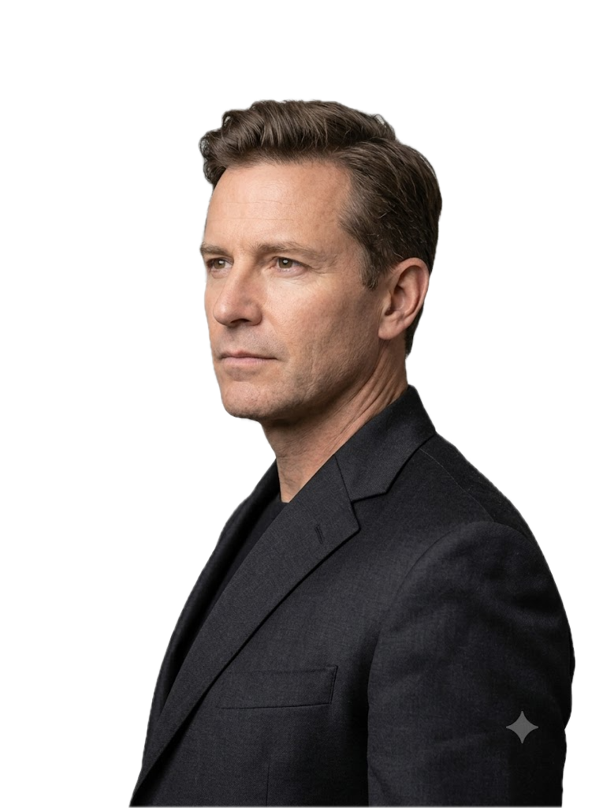

Build with
RAHIL

Python Developer | Aspiring MERN Stack Developer
I’m a BCA grad with a foundation in Python and Django, currently learning the MERN stack. I enjoy understanding how web applications work, building projects from scratch, and improving my skills through consistent hands-on practice.
About Me
My Journey
My interest in technology started during my school years, when I became curious about how websites, applications, and software worked behind the scenes. That curiosity eventually led me to programming and later to web development. I began my journey with Python and Django, where I built my first full-stack project, and I’m now expanding my skills by learning the MERN stack through hands-on projects and continuous practice.
Current Focus
Right now, my focus is on becoming a confident MERN stack developer. I’m strengthening my JavaScript skills, learning React, and working toward building complete full-stack applications that reflect modern development practices. My goal is to build a solid foundation rather than rushing through tutorials.
Beyond Coding
Learning has always been a big part of who I am, whether it’s technology, nutrition, fitness, productivity, or understanding how everyday things work. I enjoy going beyond surface-level knowledge and understanding the reasoning behind concepts instead of simply memorizing them. I believe that curiosity helps me become a better developer, make better decisions, and continuously improve both professionally and personally.
Skills
- Python
- Django
- JavaScript
- React
- HTML
- CSS
- SQL
Education
Bachelor of Computer Applications
Lok Manya College of Computer Applications
Affiliated with Gujarat University
CGPA: 7.11
Year: 2021-2024
Projects
-
Sparky Event Management
- Built a full-stack platform connecting clients with event managers.
- Implemented user authentication, dashboards, and responsive UI for smooth user experience.
- Tech stack: Python, Django, HTML, CSS, JavaScript, Bootstrap, SQL.
Contact
Phone: +91 9510580678
Email: xorahil@gmail.com